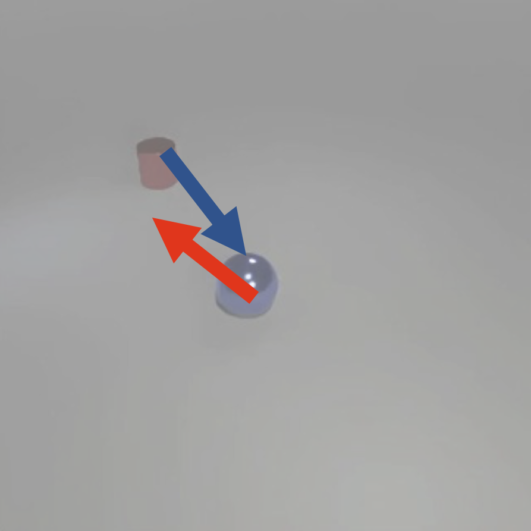
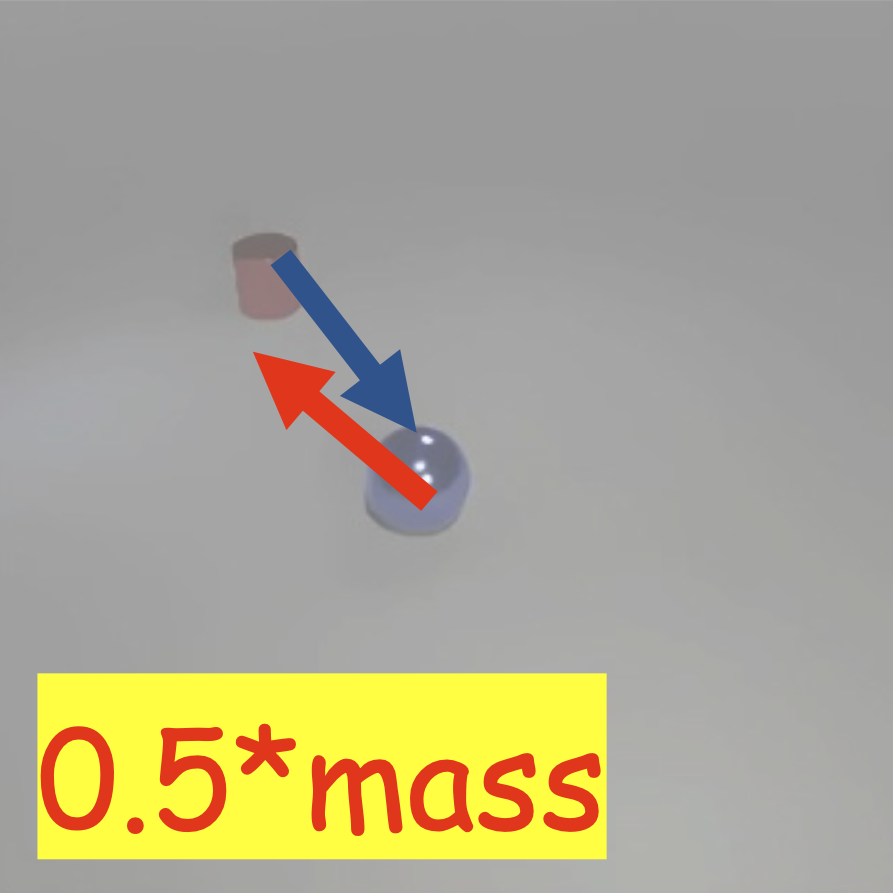
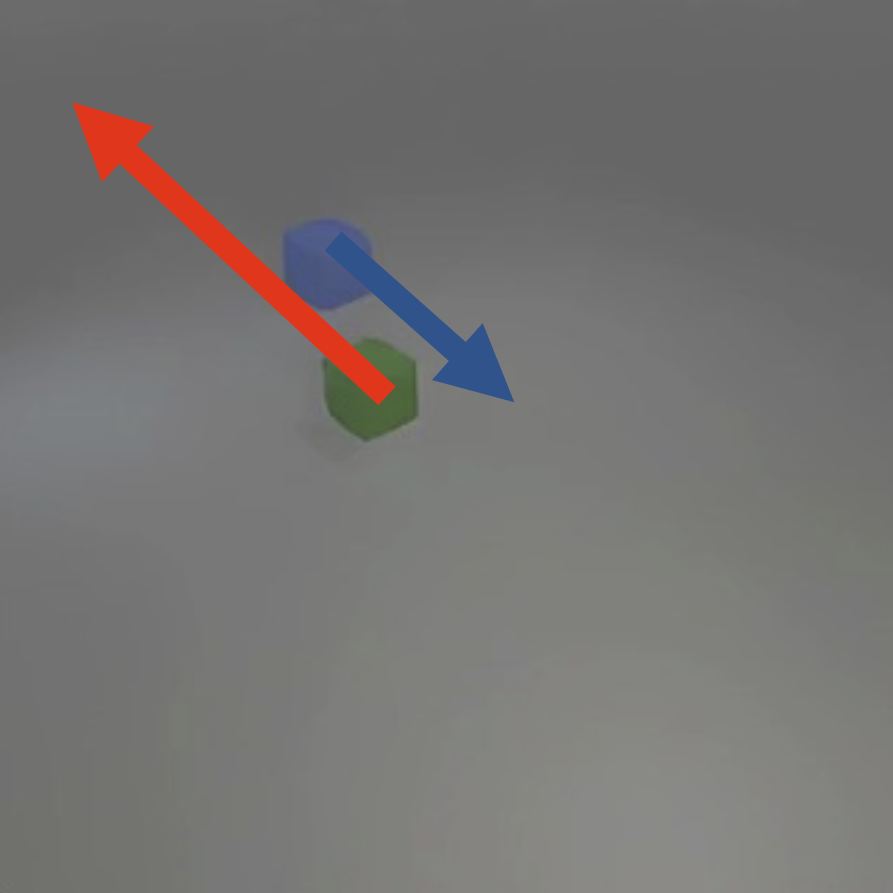
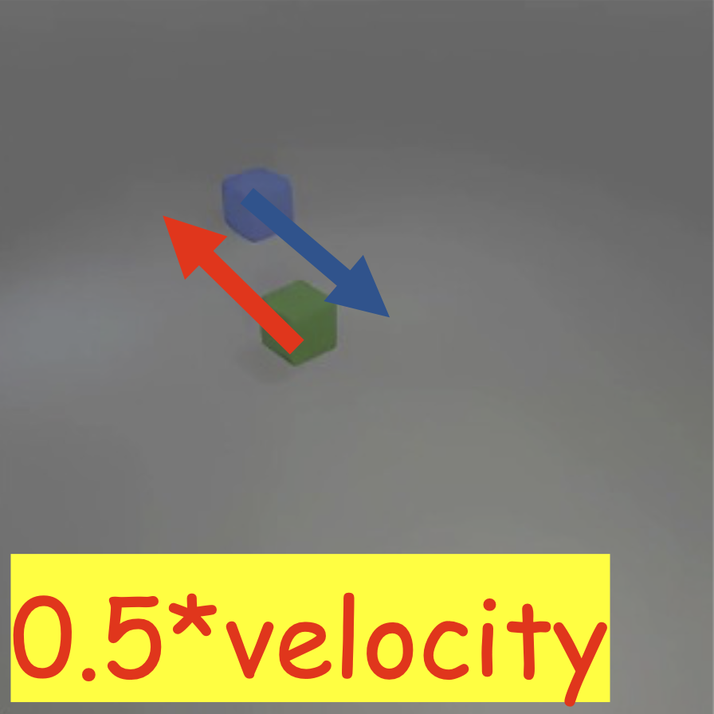
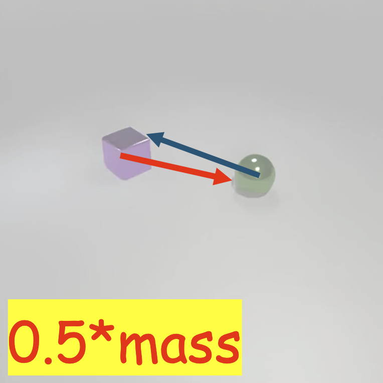
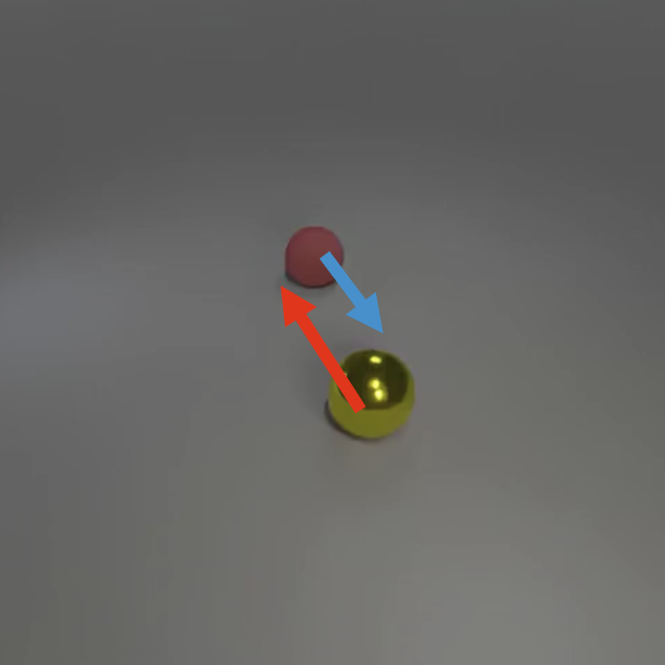
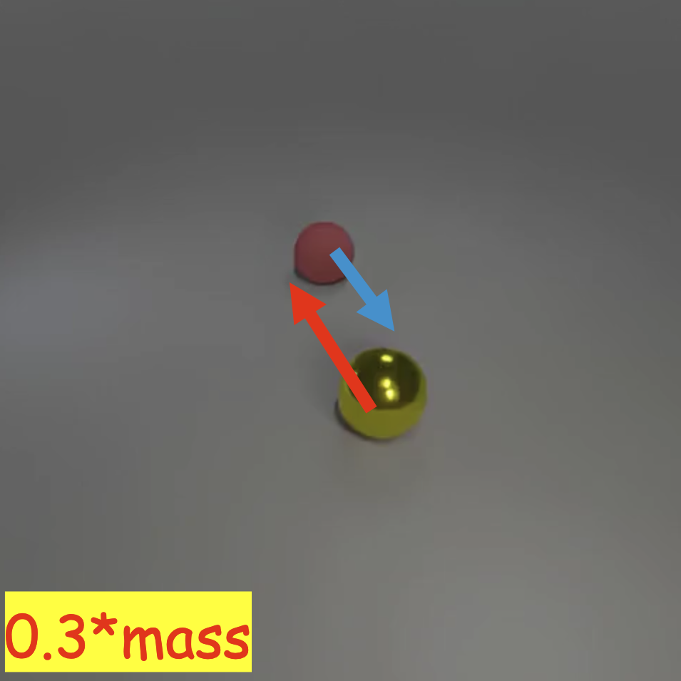

Velocity and Mass Variations
Demonstrating how STANCE can generate different motion patterns from the same initial frame.

Initial condition
Vary Case 1-1

Initial condition
Vary Case 1-2

Initial condition
Vary Case 2-1

Initial condition
Vary Case 2-2

Initial condition
Vary Case 2-3

Initial condition
Vary Case 2-4

Initial condition
Vary Case 2-5

Initial condition
Vary Case 2-6